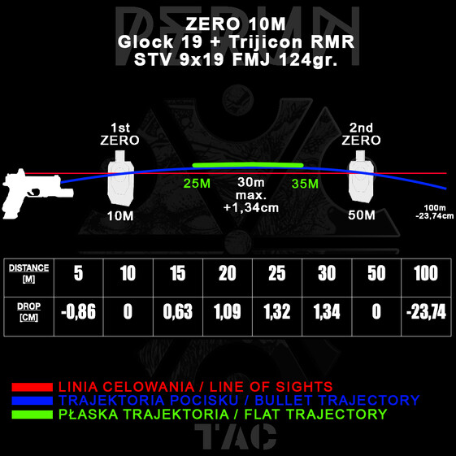
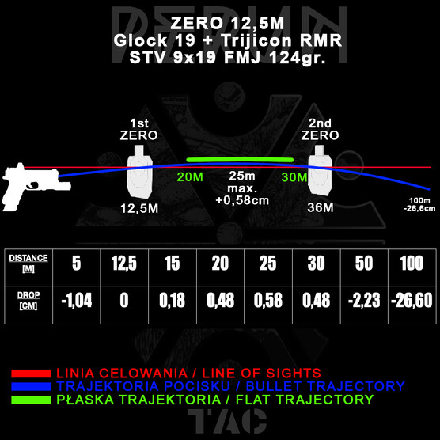
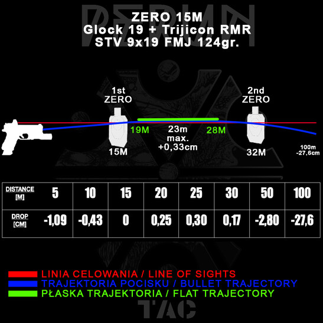
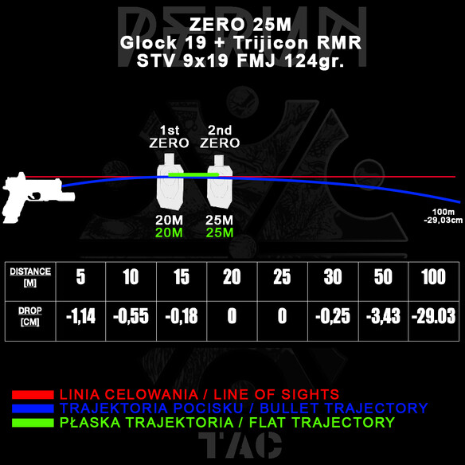

Celowniki typu Mini Red Dot Sight (MRDS) na pistoletach nie są już niczym zaskakującym. W środowisku strzeleckim stanowią obecnie standard, zarówno w zastosowaniach służbowych, sportowych, jak i obronnych. Mimo rosnącej popularności nadal pojawia się pytanie: na jaką odległość najlepiej wyzerować pistolet wyposażony w MRDS? W internecie można znaleźć wiele odpowiedzi, jednak większość opiera się na danych w systemie imperialnym i nie porusza dogłębnie plusów i minusów różnych opcji.
Poniżej przedstawiamy analizę czterech najpopularniejszych dystansów zerowania MRDS w metrycznym systemie miar, opartą na rzeczywistych danych balistycznych.
Parametry testowe
- Broń: Glock 19 (standardowa długość lufy 102 mm)
- Celownik: Trijicon RMR (punkt 3,25 MOA)
- Amunicja: STV 9×19 mm, FMJ, 124 gr
- Metoda: pomiary offsetu POA-POI przy strzelaniu z pełnej stabilizacji
Wyniki przedstawiają różnice pomiędzy punktem celowania (POA, Point of Aim) a punktem trafienia (POI, Point of Impact) na poszczególnych dystansach, przy czterech ustawieniach zera: 10 m, 12,5 m, 15 m i 25 m. Skupiamy się na dystansach istotnych praktycznie: 5, 10, 15, 20, 25 i 30 m; wartości dla 50 i 100 m traktujemy informacyjnie.
Dane: offset POA-POI dla czterech zer




Dlaczego zero 25 m wychodzi najbardziej „płasko” w dystansach 5-30 m?
Zerowanie na dalszy dystans powoduje, że linia celowania i linia lotu pocisku przecinają się w sposób, który daje mniejsze wahania POI przy średnich i dalszych krótkich dystansach. Przy wyzerowaniu na 25 m pocisk jest nieco „wyżej” w zakresie 10-25 m, ale rozkład tych odchyleń jest bardziej jednorodny, co w liczbach daje niższe mean_abs (średnia wartość bezwzględna offsetów, miara uśrednionego odchylenia) i peak-to-peak (rozpiętość między najwyższym a najniższym offsetem).
Zera bliższe (10 m) powodują większe „wzniesienie” w przedziale 15-30 m, co daje większe max_abs (największe bezwzględne odchylenie w przedziale 5-30 m) i większą rozpiętość.
Zero 25 m daje najlepszą płaskość w całym zakresie 5-30 m, ale ma największy (najbardziej ujemny) offset na 5 m: −1,14 cm. Przy bardzo bliskich trafieniach (kontakt, 2-5 m) punkt trafienia będzie nieco niżej względem celu. Jeśli priorytetem jest absolutna zgodność POA=POI na 3-7 m, lepsze są zera krótsze (10 m lub 12,5 m).
Praktyczne rekomendacje: wybór zera pod profil użycia
- Szeroki zakres 5-30 m, minimalna zmienność POI → zero 25 m: najniższe mean_abs i najmniejsza rozpiętość, czyli największa przewidywalność w całym zakresie
- Większość kontaktów 0-10 m, minimalny błąd na 5 m → zero 10 m (lub 12,5 m): dokładne trafienie na 10 m i minimalne odchylenie w najbliższej strefie, kosztem większej rozpiętości dalej
- Precyzja na środkowym dystansie 10-25 m → zero 15 m: bardzo niskie średnie odchylenie i mała rozpiętość w zakresie 10-30 m
- Uniwersalny kompromis do pracy taktyczno-służbowej → zero 12,5 m: dobre średnie wyniki, przewidywalne zachowanie w 5-30 m, mniejsze max_abs niż zero 10 m
Praktyka zerowania: procedura warsztatowa
- Stabilne stanowisko i powtarzalny chwyt: zeruj MRDS z pistoletem opartym na worku z piaskiem lub innej formie stabilizacji, aby zminimalizować błąd strzelca
- Cel: mały, kontrastowy punkt. Polecamy naszą tarczę MRDS ZERO TARGET do zera na 25 m
- Zmniejsz jasność kropki: mniejsza jasność to mniejszy widoczny punkt. Większy punkt (MOA) może zasłaniać cel i odbierać precyzję potrzebną do wyzerowania
- Strzały kontrolowane, min. 3 na grupę: połącz przestrzeliny markerem (trójkąt), poprowadź linie z każdej przestrzeliny do przeciwległej; ich punkt przecięcia to uśredniony punkt trafienia. Na nim bazuj korekty
Wnioski
Zero 25 m jest najbardziej „płaskie” w sensie najmniejszej średniej i najmniejszej rozpiętości odchyleń w praktycznie ważnym paśmie 5-30 m. Nie znaczy to jednak, że jest zawsze najlepsze: na bardzo bliskich dystansach daje największe ujemne przesunięcie POI. Wybór zera to kompromis między płaskością trajektorii w szerszym zakresie a minimalnym offsetem przy kontakcie bliskim.
Warto zaznaczyć, że ze względu na niskie ułożenie MRDS względem osi lufy oraz typowe dystanse pistoletowe, różnice między zerami na 10, 12,5, 15 i 25 m nie są tak zauważalne jak przy karabinach i wahają się w okolicach 2 cm.